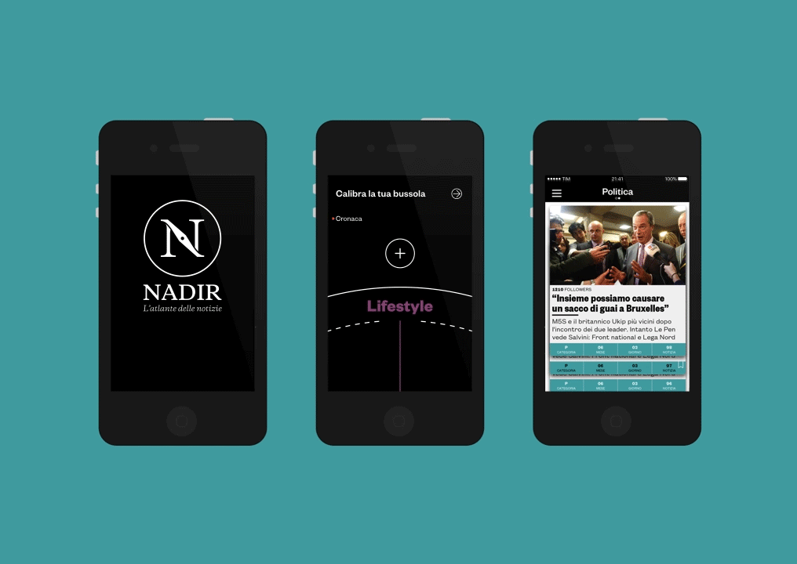
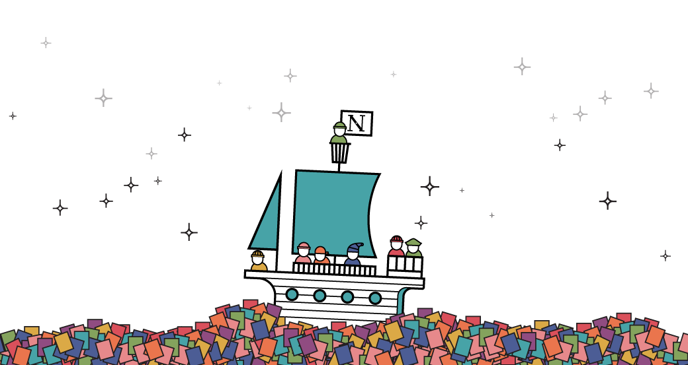

The Nadir Challange
University project in collaboration with Biagio Pandolfi, and Marco Miccichè.
The goal was to create a new concept of magazine, where paper and digital media are perfectly integrated.
So we proposed Nadir: a current news publishing system to orientate people in the overloaded world of news with an identity based on the navigation world.

"Just as a map is a tool created to help you to find your way around in unfamiliar territory, newspaper could become a tool to help people find their way around the information." — Designing News by Francesco Franchi
The Nadir Generative System
The goal of The Nadir System is to have a mobile app and a magazine perfectly integrated. So the magazine is generated by the mobile app data: the most followed news, users’s comments and so called route - album of news - determine its contents, while the most followed category of the month determines its colour.

Nadir App
On the app users can orientate users, explore and share. Selecting their favourite categories they create their compass, so they can explore Nadir so that it will show them the news of the categories selected. They can see in the Home the Nadir trends generated by the system that ordinates each news in coordinate. They can follow news to receive notifications, save and organise their favourite ones in route or share and comment on the Nadir social network.


Nadir Magazine
The periodical is a large (23x33 cm) collector's item of value with high quality paper and designed pages that wants to evoke the idea of an Atlas. Inside there is detailed news enriched with infographics, illustrations and user’s comments and the so-called route. Together we wanted these to resemble the chapter of a history book.


All together create Nadir
The Nadir users are special, because they are not just readers but part of the system: they select the news for it, and enrich it with their comments and routes. Nadir becomes a collaborative project that wants to create a map of the contemporary history.
